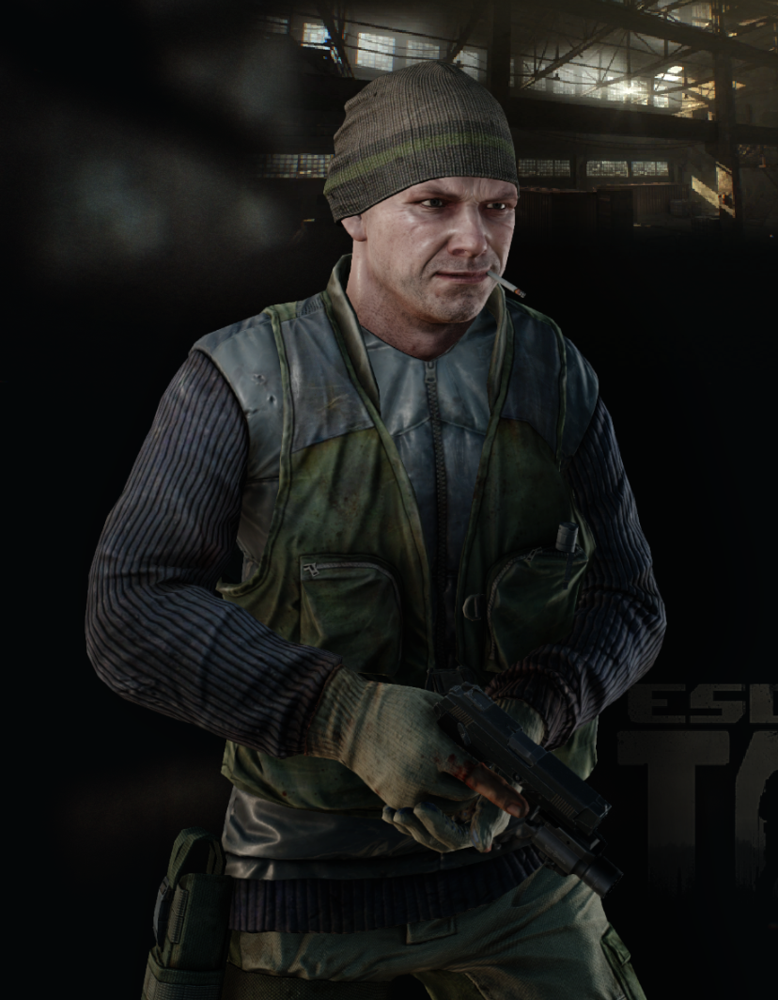
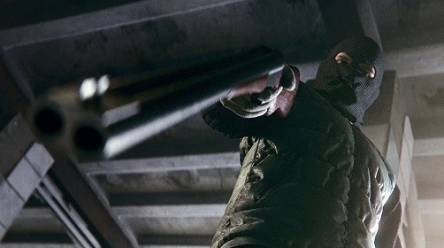

В качестве противников, по мимо других операторов ЧВК присутствует отдельная фракция, их называют дикими.
Дикие - местные жители Таркова, которым пришлось выживать в этом суровом мире из-за войны.
Ради еды, выживания, а может и ради марадерства они взяли в руки оружие и вышли на улицы Таркова.

На фоне постоянных боевых действий в городе вспыхнула паника: население спасается бегством, а те, кто остался, стремятся поживиться за чужой счет.
Приняв новые реалии как данность и сбившись в хорошо вооруженные группировки, «дикие» тарковчане взялись за дележ города.
Сегодня весь Тарков разграничен невидимыми линиями, за которыми простираются территории той или иной банды:
готовые на все ради наживы, они не останавливаются ни перед убийством гражданских, ни перед противостоянием с двумя частными военными компаниями.

Дикий может быть как под управлением искусственного интеллекта, так и под управлением игрока.
Противостояние операторов ЧВК и диких будет, по сути, PvE составляющей игры.
Дикие появляются со случайной экипировкой.
Каждый дикий имеет уникальное имя.
В рейде дикий может скооперироваться с ЧВК, помочь ему или убить.
Игра за дикого представляет вам особый игровой опыт.
Обычно игра за дикого предвещает быть интересной, так как вы ограничены в различных расходниках и не можете выбирать себе снаряжение.
Если вы успешно закончите рейд за дикого, то сможете забраться себе его экипировку.